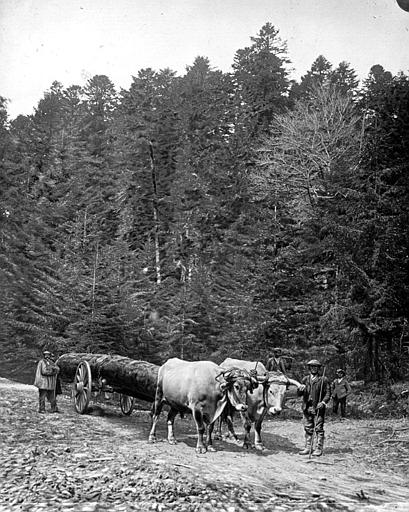

Panneau d'entrée dans la forêt des Fanges
La forêt des Fanges est une ancienne forêt royale (aujourd'hui forêt domaniale) dans laquelle un jeu souvent pratiqué est de rechercher les balises à fleur de Lys
Pour ces bornes fleur de lysées, je vous conseille la lecture de l'excellent article "fleur de lys gravée sur un cœur de pierre" de Jean Pierre de Belcaire. Dans ce blog il y a aussi de nombreuses cartes postales de la forêt des fanges et de la maison des gardes (j'ai pas su voir de pierres de la forêt des Fanges par contre...)

Carte d'arpentage de la forêt royale des Fanges (1737-1750) par l'arpenteur royal Pierre Louis Veliey

Carte actuelle - inversée par rapport à l'ancienne...
Il est amusant de constater que le forêt domaniale des Fanges n'est jamais dans la commune de St Martin qui longe en certains points sa limite sud-ouest.
Le musée virtuel de Caudies propose une étude historique sur la forêt des fanges
Cette maison abritait les gardes de la forêt. La bâtisse que nous pouvons voir aujourd'hui date de 1863, elle a été reconstruite à l'emplacement du bâtiment précédent beaucoup plus ancien. Elle est construite dans un grand champ au milieu de la Forêt, ce champ est appelé le pré du roi (Prat del rei ou Prat del rey). Comme la forêt, cette bâtisse est sur la commune de Puilaurens (ce qui donne à cette commune une superficie considérable). Mais en distance St Martin est la zone habitée la plus proche. C'est pourquoi le garde qui lança l'alerte de l'incendie de 1800 à Félix Armand a choisi de descendre à Saint Martin en priorité pour lancer l'alerte, sachant trouver là des bûcherons aguerris et équipés qui saurait contenir le feu par des coupes appropriées.

La maison des gardes et le pré du roi

La maison des gardes aujourd'hui

La porte d'entrée de maison des gardes portant la date de la construction
Sur le travail des gardes forestiers tel qu'il était à l'origine de la maison des gardes, voir par exemple "Les délits forestiers en Pays de Sault au XVIIIe siècle", article de Christian Fruhauf dans Annales du Midi Année 1983 95-164 pp. 391-428 (n° thématique : Eaux, forêts et biens communaux (XVIIIe-XXe siècle)) sur le site du portail Persée

Les chemins en face du pré du roi
Carte colorisée

Les grands sapins de la forêt

Les métiers de la forêt : les rouliers
Ci-dessous une photo de la Médiathèque de l'architecture et du patrimoine (Ministère de la culture) :
Transport du bois dans la forêt des Fanges par des boeufs attelés (Localisation : France ; Occitanie ; Aude ; Saint-Martin-Lys)

Marquage par bornage

Marquage par muret de délimitation

Marquage par des arbres d'essence rare
Pour exploiter la forêt des Fanges de nombreux chemins ont été tracés. Le plus large aujourd'hui est celui qui part du col du Campérier, la route qui monte depuis le Pont d'Alies
Cette piste principale date de 1874 et une bonne partie passe sur le territoire de la commune de St Martin

plan du 11-02-18741 de la partie de la piste de la forêt des fanges passant sur le territoire de St Martin - Entre le "Pas du loup" et le "col de Quillan" (en rouge)
L'enquête d'utilité publique de 2016
Un projet d'implantation d'éolienne sur la forêt des Fanges, montre dans son étude la diversité de cette forêt.
Finalement ce projet aurait été retoqué par le préfet de l'Aude - Article de France Bleu du 28/02/2017
Pour plus de détail sur la forêt des Fanges et les espèces de plantes qu'on pouvait trouver en 1888 voir l'article de presse du Vigneron Narbonnais
À la France : sites et monuments. Pyrénées-Orientales (Ariège, Aude, Pyrénées-Orientales) de 1900
LA FORÊT DE FANGES. — Dans le massif montagneux des Corbières, que domine le pic de Bugarach, s'étend la belle forêt de Fanges, que des routes médiocres sillonnent, et qui mériterait une visite des touristes si les moyens d'accès étaient plus faciles et surtout plus courts. Des ombrages merveilleux, des éclaircies avec d'admirables perspectives, des scènes de la vie forestière, et surtout le voisinage de l'étrange col de Saint-Louis et des gorges de Saint-Antoine-de-Galamus, dans les Pyrénées-Orientales, seraient des attractions puissantes.
La forêt de Fanges couvre un plateau élevé, coupé à pic de presque tous les côtés, et qui domine, à l'ouest, la vallée où serpentent la route et le chemin de fer de Quillan à Saint-Paul-de-Fenouillet. Elle est principalement constituée par des futaies épaisses d'énormes sapins dont l'exploitation est une des ressources du pays.
A peu près au centre de ces bois, se trouve une clairière formant prairie au milieu de laquelle s'élève une maison forestière; c'est le Pré-du-Roi.
On peut arriver de plusieurs côtés à la forêt de Fanges : mais les routes forestières, caillouteuses, fatiguées par les transports des arbres, et malheureusement peu suivies par les touristes, pourraient être améliorées.


Vue sur la Carte du diocèse de Narbonne de 1704
(Narbonne, Médiathèque du Grand Narbonne, CP 134.)
1Archives départementales de L'Aude - 2 OP 2782